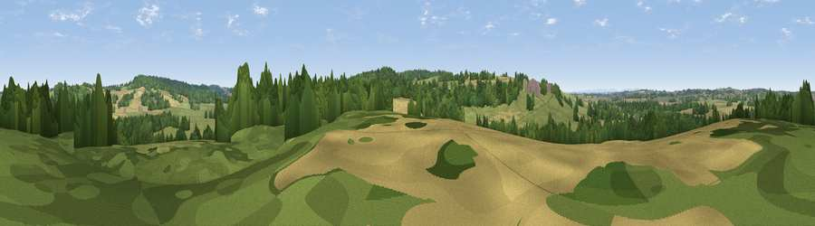

Viewpoint near Aston
#29949 in England · top 47% of its area beats it · near Aston · path 123 mWhere it is
The exact computed spot (SJ 74675 39075). Click the marker for map links.
Public access: the nearest public right of way is about 123 m away — the final stretch may cross private land. Computed from Natural England's CRoW access layer and OpenStreetMap rights of way — not the legal definitive map. Always verify locally.
The view, rendered

A 360° render of this exact spot computed from the terrain model, tree cover and land cover — summer colours, afternoon light, calibrated against photographs of famous viewpoints. Real trees, hedges and buildings will differ in detail.
The panorama
Grey silhouette: terrain skyline in each direction (720 bearings, Earth curvature and refraction included). Dashed green: skyline with trees (+15 m) and buildings (+8 m) as obstacles. Blue strip: how far the ground is visible on each bearing.
Where the view opens
Wedge length = distance to the farthest visible ground on that bearing (vegetation-aware). Rings at 10, 25 and 50 km.
What fills the view
47% grassland · 33% woodland · 19% cropland ·
Angular shares of the visible panorama (visual magnitude), not map area. Landscape diversity 0.47 (0–1 Shannon).
Key numbers
More beautiful places nearby
The staircase of upgrades: each row has a higher view potential than everything closer. Driving times are estimates from straight-line distance, calibrated against real road routing — check an actual route before setting out.
| Place | Direction | Drive | Score |
|---|---|---|---|
| Viewpoint near Aston | ENE · 2 km | ~6 min | 57.5 |
| Woore Hill | NW · 4 km | ~9 min | 60.1 |
| Bar Hill | NNE · 5 km | ~11 min | 61.3 |
| Viewpoint near Madeley | NNE · 5 km | ~12 min | 66.7 |
| Bignall Hill | NNE · 14 km | ~26 min | 75.2 |
| Viewpoint near Marchamley | SW · 19 km | ~33 min | 77.5 |
| Viewpoint near Mow Cop | NNE · 21 km | ~36 min | 80.2 |
| Viewpoint near Harthill | NW · 28 km | ~45 min | 80.5 |
52.94845, -2.37835 · source: screening · position refined by local search. Computed location — check access rights before visiting.